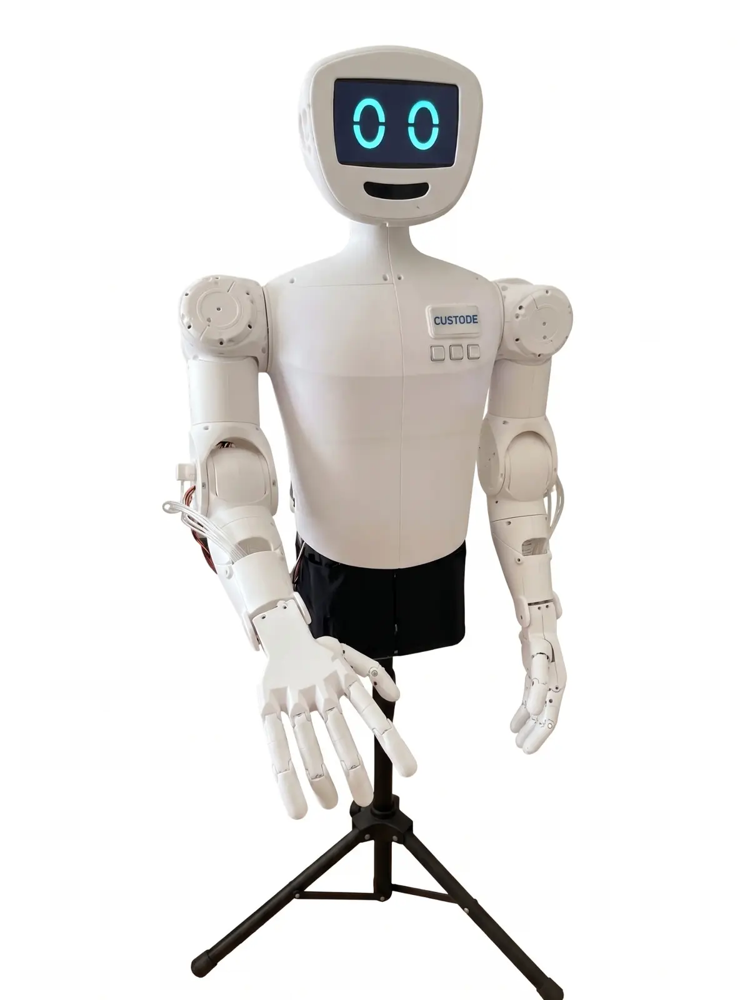
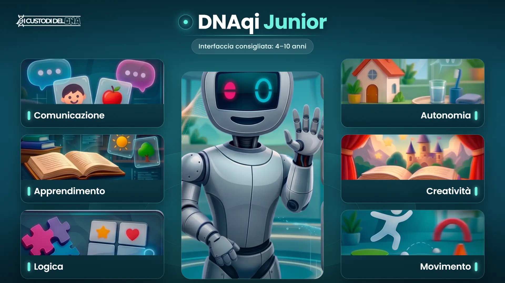
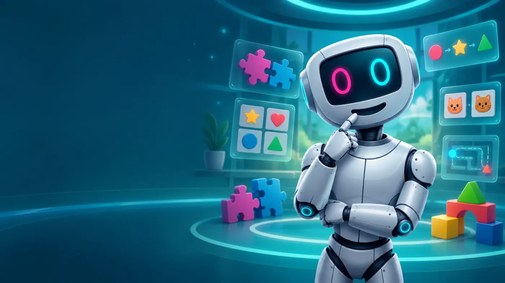
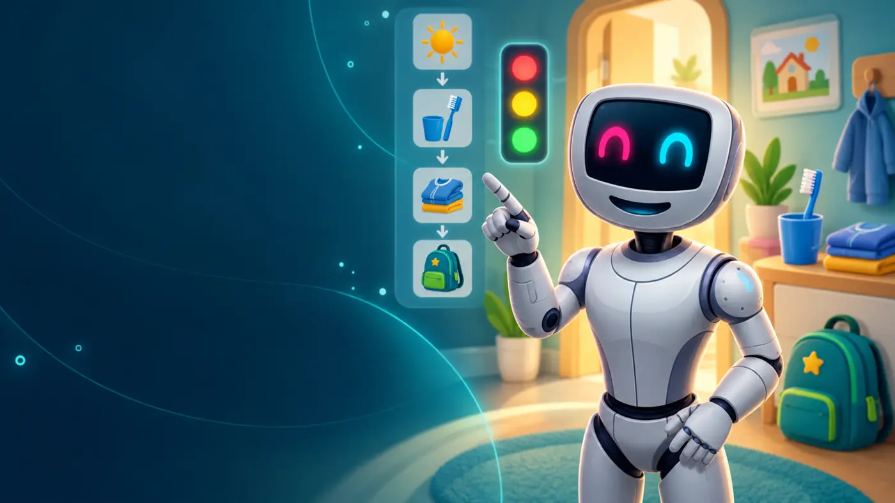
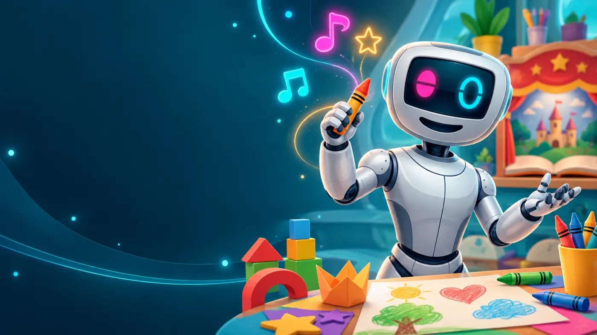
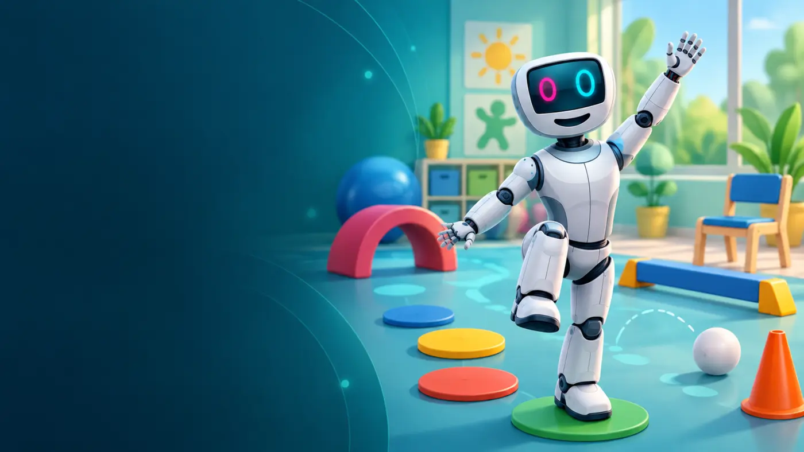

Tempi personali
Attendere realmente la risposta, senza anticiparla o trasformare l'attesa in errore.
RARE DISEASES AWARD 2026 · CATEGORIA D
DNAqi è un prototipo assistivo nato dall'esperienza diretta di una famiglia. Collega un profilo personalizzabile, un tablet accessibile e il robot sociale CUSTODE per sostenere comunicazione, apprendimento e possibilità di scelta.

LA DIMOSTRAZIONE
Il video mostrerà una bambina, ripresa di spalle, mentre utilizza DNAqi per esprimere un bisogno. CUSTODE rispetta i suoi tempi, propone alternative accessibili e conferma la scelta senza decidere al suo posto.

Le riprese saranno effettuate con autorizzazione. Verranno utilizzati esclusivamente dati dimostrativi e immagini compatibili con la tutela della minore.
IL BISOGNO
Bambini e ragazzi con malattie rare e bisogni comunicativi o cognitivi incontrano spesso strumenti separati, rigidi o difficili da mantenere coerenti tra casa, scuola e percorsi professionali.
Attendere realmente la risposta, senza anticiparla o trasformare l'attesa in errore.
Integrare parole, simboli, immagini, pulsanti e voce nello stesso percorso.
Rendere comprensibili impostazioni e riscontri tra caregiver, scuola e professionisti.
COME FUNZIONA
Il caregiver configura modalità comunicativa, tempi, interessi e livello di stimolazione.
DNAqi propone attività e un numero di alternative coerenti con le impostazioni scelte.
Tablet, voce e piccoli gesti accompagnano la persona lasciandole il tempo di rispondere.
Il caregiver vede attività, scelta espressa e supporto utilizzato, senza diagnosi automatiche.
UN PROFILO, SEI AREE
Bisogni, preferenze, emozioni e richieste di aiuto.
Attività graduate secondo età, tempi e capacità.
Associazioni, sequenze, memoria e problem solving.
Routine, scelte e attività della vita quotidiana.
Storie, disegno, musica ed espressione personale.
Attività motorie accessibili, guidate e adattabili.
Ogni immagine riproduce la schermata che compare sul tablet: i pulsanti avviano le attività del modulo e CUSTODE accompagna la scelta con voce, schermo e gesti controllati.




COSA FUNZIONA OGGI
Ogni elemento viene dichiarato secondo il suo reale stato di avanzamento. Le funzioni sperimentali restano separate da quelle già utilizzabili.
Corpo robotico, unità locale e controllo hardware.
App collegata al sistema centrale sulla rete locale.
Front page e attività organizzate per area.
Preferenze, comunicazione, accessibilità e consenso.
Risposte vocali e movimenti guidati e controllati.
Elaborazione locale con limiti e controllo umano.
TUTELA E RESPONSABILITÀ
DNAqi non formula diagnosi, non sostituisce professionisti e non assume decisioni cliniche. Le funzioni automatiche operano entro limiti configurati dall'adulto.
REPLICABILITÀ
DNAqi è progettato perché la stessa architettura possa essere configurata per persone, età e contesti diversi, mantenendo chiare le autorizzazioni e il ruolo degli adulti e dei professionisti.
DA DOVE NASCE
DNAqi nasce dall'esperienza quotidiana di una famiglia e dall'esigenza di collegare strumenti che spesso restano separati. Il progetto viene sviluppato con un approccio progressivo, documentato e aperto al confronto con famiglie e professionisti.
Ideazione e responsabilità del progetto: Adriano Coschiera, caregiver e ideatore.
Realtà associativa promotrice: I Custodi del DNA.